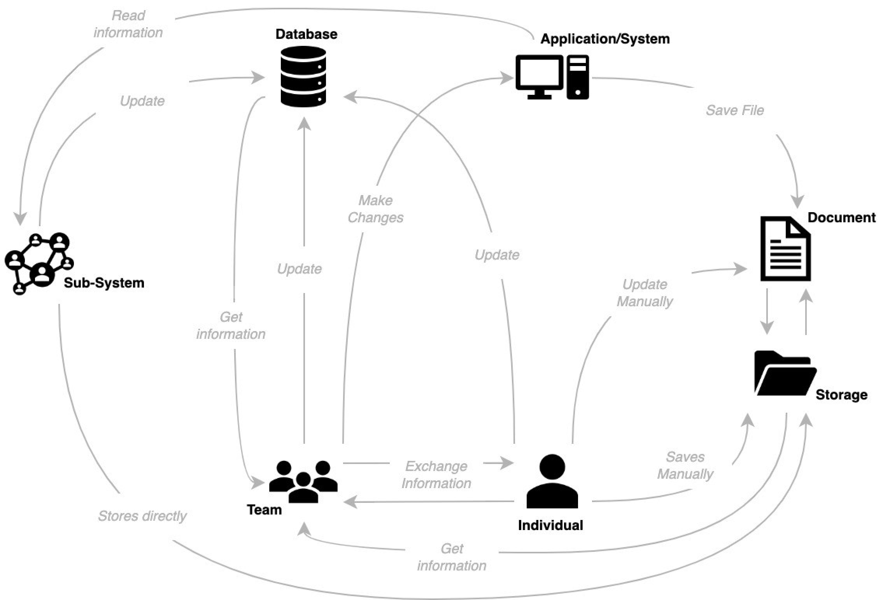

System Theory and Enterprise Transformation
How can viewing the Enterprise as a System can help an organisation to understand their Transformation (e.g. Business, Digital etc.) better and adopt a more holistic and integrated approach to it? In this article I will expand on this approach and I will provide ideas on how specific frameworks and theories can be leveraged to help understand better the dynamics inside an organisation during a Transformational journey, always in alignment with the view of the Enterprise as a System.
Enterprises are Complex Systems impacted by “Entropy” with a large number of Entities and its behaviour rises from the Relationships and Interactions between these Entities, rather than from a simple set of rules.
Why “Enterprise as a System”?
Before we dive into the details, let’s expand on why it can be useful to define the Enterprise as a System (in the context, but not limited to, of Transformation). Viewing the Enterprise as a System can provide a holistic understanding of how the various parts (e.g. teams, tools etc. as we will see later) of an organisation work together. Having this deep understanding of the Enterprise’s structure and interactions is key for the successful outcome of a Transformation initiative and it will enable the organisation to identify areas of innovation and improvement.
As we will see later, by viewing the Enterprise as a System we can remove and generalise some details and move to a higher abstraction layer, which will allow us to focus on the details which are important for a successful Transformation (e.g. Interactions between the Entities).
What is a System and how it aligns with an Enterprise
In the System Theory context, a System can be defined as “a set of interrelated Entities that work together to perform a specific Function, in order to meet specific Requirements or Objectives.”
This is the definition which will be used here and its key terms will be aligned with the concept of an Enterprise in the sections below, with the final goal of deriving a definition of the Enterprise as a System.
Objectives and Requirements
The terms “Requirements” and “Objectives” are used extensively in the Enterprise and Transformation context. Here we assume that the Objective of the Enterprise can be derived by the Vision of the organisation. The Vision should provide the long-term goals and aspirations of the Enterprise, which can help define the Objective of the Enterprise as a System in this context.
We also assume that the Requirements of the Enterprise as a System are derived from the Strategy of the organisation. The Strategy should include the specific plans with timelines for how the Enterprise will achieve its Vision, which can help define these Requirements.
The Vision is considered a broader statement about the long-term goals of an Enterprise and will be the basis to develop the Strategy, which is a plan that outlines how to achieve this Vision. In this analogy, the Objective of the Enterprise as a System is the broader statement of the purpose or goal of the organisation, which is used to derive the Requirements to achieve the particular goal.
Functions
The Functions of the System are referring to a deeper level and represent what the System is intended to do in order to achieve the desired Objectives. In this context a Function of an Enterprise as a System represents the actions or activities the organisation must perform to achieve its desired Objective. The specifics of the Function will depend on the characteristics of the organisation. For example, a Function of an Enterprise in the context of Systems could be Software Development, Customer Support, Product Delivery etc.
It is important to mention that the Entities of a System and their Relationships will enable the Functions and when we look at a System, we should expect that the functionality delivered is of greater value than the sum of its parts (Emergence).
Entities
As an Entity of a System we can define something that is tangible, physical or logical. It is important to be able to distinguish the Entities at the various levels of abstraction of the System. In this context, when we look at the Enterprise as a System, as an Entity we can assume a tool or technology (e.g. a database, server), teams or individuals, documents, code etc. Depending on the level of abstraction we are looking at an organisation, the Entities may be whole Product teams or Business Units, or specific individuals and tools.
In some definitions of a System the terms “Elements” and “Components” are used. In this case, a similar analogy could be used, where the Element is something tangible and a Component is a fundamental building block of the System. Here we will use the term Entities for simplification and as mentioned above its alignment to the Enterprise context will depend on the level of abstraction.
The Enterprise as a System
One can now start seeing how the above System definition can map to an Enterprise.
An Enterprise can be viewed as a set of interrelated Entities, that work together to perform specific Activities to achieve the Enterprise’s Vision. The same approach and definition can be followed to describe parts of an Enterprise e.g. specific verticals, teams etc. In that case, these parts can be described as Sub-Systems of the wider System, which is the Enterprise.

Complexity
A Simple System is often linear, with a small number of Entities and its behaviour is usually proportional to the inputs. We should be able to predict the behaviour of a Simple System based on a small number of rules.
However, an Enterprise cannot be considered a Simple System. Enterprises are Complex Systems with a large number of Entities (e.g. teams, tools etc.) and its behaviour rises from the Relationships and Interactions between these Entities, rather than from a simple set of rules.
A characteristic of the Complex Systems is that their behaviour is not necessarily proportional to the inputs. Thus, one can understand how changes which are implemented e.g. under a Transformation initiative, may impact the Enterprise in an unforeseen and undesired way.
Order and Entropy
One can assume that the Enterprise looks like an Ordered System. The Entities are arranged in a particular pattern based on the Organisation’s Structure and their behaviour, Relationships and Interactions are well understood e.g. via the defined policies, processes, procedures etc.
However, if we assume Entropy is measuring the degree of disorder (or uncertainty if we look in Information Theory) in the System, we should expect that Entropy increases in the Enterprise as a System as the organisation grows or as part of the Transformation journey.
We assume that the Enterprise is an Open System that interacts with its surroundings (e.g. competitors, market conditions etc.) and the changes in the Entropy (increase or decrease) are also due to these interactions and not just internal reasons.
We know that Entropy limits the efficiency of a System and affects its stability. So, in the context of the Enterprise as a System if we do not look to address the impact of “Entropy” in the organisation, the Enterprise will become less efficient and more prone to fluctuations (e.g. due to market changes) and instability.
Minimise the Impact of Entropy
While it may be impossible to completely eliminate the effects of Entropy in a System, there are some strategies which can be used to minimise its impact. In the context of the Enterprise as System, these strategies can help the organisation to remain efficient and stable as it grows and throughout its Transformation journey.
In a System context one can try to minimise energy losses in order to minimise the impact of Entropy. In the Enterprise as a System context, the organisation should ensure that its resources are focused and used on the right initiatives and activities. Thus, time and effort are not wasted e.g. during their Transformation journey. This also includes removing blockers which may cause significant waste of effort and time.
The maintenance of a System (e.g. replace worn parts etc.) can also minimise the effects of Entropy. Similarly in the Enterprise as a System context, replacing tools which are not fit-for-purpose, replacing obsolete processes etc. can reduce the impact of “Entropy”.
Another strategy to minimise the impact of Entropy in a System is to use Feedback Control Systems which monitor the System and make the necessary adjustments to maintain the optimal performance. In the context of the Enterprise as a System, having the right metrics and the appropriate feedback loops across the organisation, can significantly and positively contribute to the successful outcome of a Transformation initiative.
Finally in the Systems context, Recycling Systems can be used to minimise the impact of Entropy. In the Enterprise context, the organisation can leverage their current strengths, capabilities, people, tools etc. where appropriate in order to reduce the impact of “Entropy”. However, it is worth mentioning here that in order for an organisation to transform, the development of new capabilities is key.
| System | Enterprise |
|---|---|
| Use energy-efficient processes to minimise losses | Spend time and effort of value-adding activities which help achieve the desired goal |
| Maintain the System regularly | Review policies and procedures regularly and amend accordingly. Replace not fit-for-purpose tooling |
| Use Feedback Control System to monitor the System and make adjustments | Use the right metrics and establish appropriate feedback loops across the organisation |
| Use Recycling System to reuse materials and energy in the System | Leverage current strengths, acquire new skills and grow new capabilities |
Enterprise States and Transformation
In System Design, the State of a system describes its configuration and condition and determines its behaviour and response to different inputs. Following a similar analogy when we view an Enterprise as a System, the State will determine how the Enterprise will behave (e.g. develop Product or Software, deliver value etc.) and how will it react to different stimuli (e.g. internal changes, market changes).
It has started to become clear that the State of a System is closely related to the Functions of the System, as the State will determine the behaviour and performance of its Functions. As mentioned previously the Functions are enabled by the Entities and their Relationships. Thus, by changing the Entities and their Relationships, the State of the System (configuration and condition) can change, which subsequently can change the performance of the Functions, which are the means to achieve the desired Objectives.
Transformation is all about change and by borrowing some elements of the Evidence-Based Management approach in the Enterprise as a System context, we can describe how the different levels of change on Entities and their Relationships can lead an Enterprise to the desired State. As part of the Transformation journey map the Enterprise should define the respective States at different levels of detail. Each State will require different amounts of change across the Enterprise and across its Entities (e.g. tools, teams, technology etc.) and their Relationships and Interactions. In the context of the Enterprise as a System we can define several States.

- Target State: This is the aspirational State of the organisation e.g. when the Objective is met. There will be many uncertainties around what changes are needed in order to reach that State.
- Interim Transition States: These interim States are more practical and can be derived from the Requirements (or the Strategy of the Enterprise). The changes required at the Entities (e.g. teams, tools etc.) and their Relationships are not completely unknown, but there may be some uncertainties about how to get there.
- Immediate Tactical States: These are near-term States, which are required in order to reach the Interim State. The specific changes around the Entities and their Relationships to reach the Immediate Tactical State are known.
- Starting State: This is the State of the Enterprise at the beginning of the Transformation journey and is presented relative to the Target State and Interim State.
- Current State: This is the State of the Enterprise at the present time, relative to the Target State and Interim State.
In each State, the organisation must ensure that the appropriate Metrics and Measurements exist (e.g. the strategy around Feedback Control Systems previously) as the results of these measurements will define the direction and steps for the next State.
Scale of Prescriptiveness
Looking at the above diagram, there are multiple States an organisation needs to go through in order to reach the Target State. If we imagine a Scale of Prescriptiveness, each State will be on a different position. Thus, each State must be defined at different levels of detail.
For the Immediate Tactical States, the Entities, their Interactions and Relationships, and their Function(s) must be fully defined in detail. The Enterprise needs to be contextual when defining these States and what the Entities need to do and have enough information to know how to implement the necessary change(s).
In addition, when defining the Immediate Tactical States, the details of the appropriate “ilities” must be taken into consideration (e.g. scalability, usability, security etc.). The specific “ilities” depend on the System. In the context of the Enterprise as a System these “ilities” will depend on the part of the organisation we are focusing on at the specific State.
However, when the Enterprise looks to define the Interim Transition States, there should be enough room to allow for manoeuvre. This will allow the organisation to experiment and learn, while at the same time they have a Transformation direction to go. As the organisation reaches closer to the specific Interim Transition State, the level of prescriptiveness should increase.

Summary
By viewing an Enterprise as a System of interrelated Entities we can get a holistic view of an organisation and a better understanding of the challenges which inevitably arise in a Transformation journey. Transformation of an Enterprise is difficult, because the Enterprise is a Complex System impacted by “Entropy”. In addition, some high-level strategies on how to overcome some of these challenges and how to plan the Transformation journey more effectively using the concept of System States were highlighted.
I hope you have found it useful, learned something and enjoyed reading it as much as I enjoyed writing it.